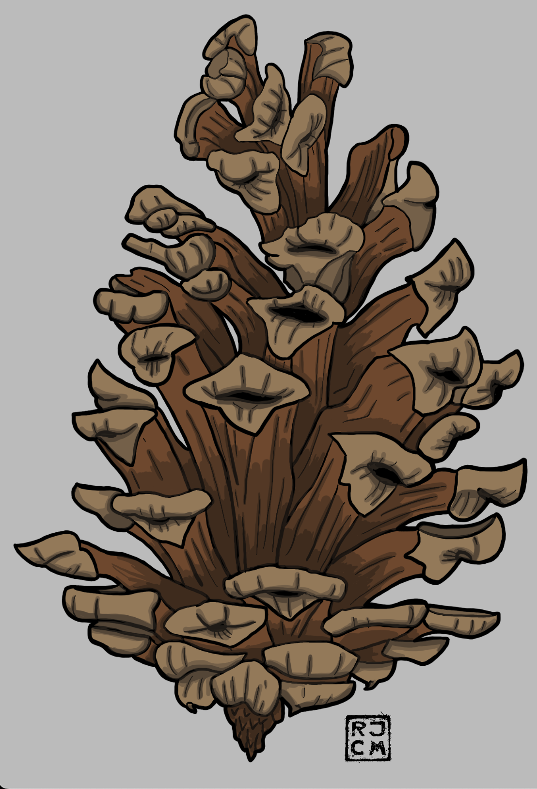
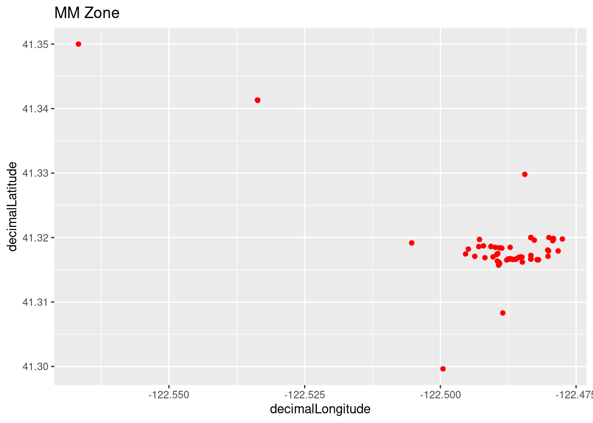
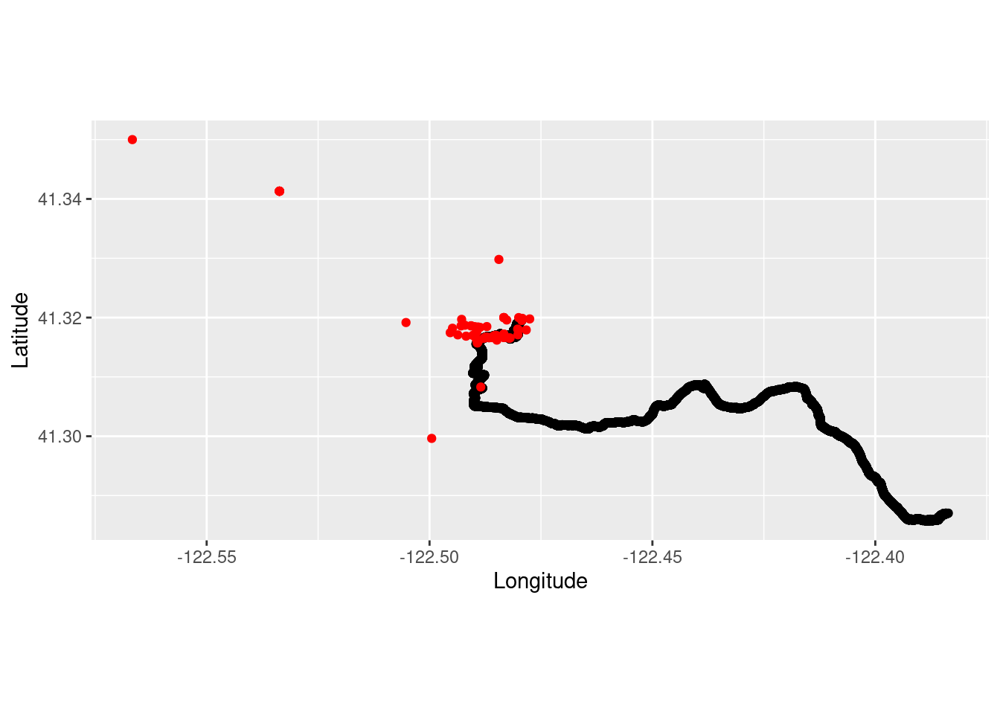

library(tidyverse)
library(gpx)
library(rayshader)
library(rgbif)
library(data.table)
library(maps)Mount Eddy Trail Run
species distribution
modeling
GIS
maps
data
trail run
exercise
explore
illustration
–Foxtail Pines Revisited
 Foxtail Pine Cone Illustration
Introduction
My partner and I recently revisited one the conifer species that occur in the Miracle Mile, but by trail running up to the top of Mount Eddy (9,037 ft; 2,754 m) in the Klamath Range. The final sub-alpine zone near the top of the mountain is a large grove of Foxtail Pine (Pinus balfouriana). I paid another visit to that same grove in another recent post, but did not go up to the higher elevations above 8000 ft.
Load the libraries.
In-file the trail run gps data and make a data frame to use for plotting.
run <- read_gpx('~/DATA/data/mount_eddy_trail_run.gpx')
summary(run) Length Class Mode
routes 1 -none- list
tracks 1 -none- list
waypoints 1 -none- listTrailRun1 <- as.data.frame(run$routes)
TrailRun1$Time <- as.numeric(row.names(TrailRun1))Make a quick plot using the latitude and longitude coordinates.
TR_p1 <- ggplot() +
geom_point(data = TrailRun1, aes(x = Longitude, y = Latitude), color = 'black', size = 2) +
xlab("Longitude") + ylab("Latitude")
TR_p1Take a look at the elevation profile of the run.
TR_p2 <- ggplot() +
geom_line(data = TrailRun1, aes(x = Time, y = Elevation), color = 'black', size = 2) +
xlab("Time (seconds)") + ylab("Elevation (m)")
TR_p2We can also plot the run and false color it based on the elevation. We can pass this plot to the plot_gg() function in the rayshader package to make a 3D plot of the run. The code for that is not run on the website because it takes too long to render, so I am showing the rendered snapshot as an external image instead.
TR_p3 <- ggplot() +
geom_point(data = TrailRun1, aes(x = Longitude, y = Latitude, color = Elevation), size = 2) +
scale_color_continuous(limits=c(800,2800))
TR_p3# Not run for website rendering purposes, but you should!
# plot_gg(TR_p3, width = 15, height = 15, multicore = TRUE, scale = 1000,
# zoom = .7, theta = 10, phi = 20, windowsize = c(3000, 3000))
# Sys.sleep(0.2)
# render_snapshot(filename = "mt-eddy-run-elevation-plot3.png", clear = TRUE)Using the Latitude and Longitude coordinates of the area we can make a general area polygon to be used for a GBIF species observation query to the public database.
norcal_geometry <- paste('POLYGON((-122.6 41.35, -122.6 41.25, -122.4 41.25, -122.35 41.25, -122.35 41.35, -122.6 41.35))')
mm_species <- c("pinus balfouriana") # can add multiple species here for larger query
foxtail_data <- occ_data(scientificName = mm_species, hasCoordinate = TRUE, limit = 10000,
geometry = norcal_geometry)
foxtail_dataRecords found [74]
Records returned [74]
Args [hasCoordinate=TRUE, occurrenceStatus=PRESENT, limit=10000, offset=0,
scientificName=pinus balfouriana, geometry=POLYGON((-122.6 41.35, -122.6
41.25, -122.4 41.25, -122.35 41.25, -122.35 41.35, -122.6 41.35))]
# A tibble: 74 × 124
key scien…¹ decim…² decim…³ issues datas…⁴ publi…⁵ insta…⁶ hosti…⁷ publi…⁸
<chr> <chr> <dbl> <dbl> <chr> <chr> <chr> <chr> <chr> <chr>
1 41657… Pinus … 41.3 -122. cdc,c… 50c950… 28eb1a… 997448… 28eb1a… US
2 41657… Pinus … 41.3 -122. cdc,c… 50c950… 28eb1a… 997448… 28eb1a… US
3 44002… Pinus … 41.3 -122. cdc,c… 50c950… 28eb1a… 997448… 28eb1a… US
4 43998… Pinus … 41.3 -122. cdc,c… 50c950… 28eb1a… 997448… 28eb1a… US
5 44000… Pinus … 41.3 -122. cdc,c… 50c950… 28eb1a… 997448… 28eb1a… US
6 44001… Pinus … 41.3 -122. cdc,c… 50c950… 28eb1a… 997448… 28eb1a… US
7 43999… Pinus … 41.3 -122. cdc,c… 50c950… 28eb1a… 997448… 28eb1a… US
8 44004… Pinus … 41.3 -122. cdc 50c950… 28eb1a… 997448… 28eb1a… US
9 44049… Pinus … 41.3 -122. cdc,c… 50c950… 28eb1a… 997448… 28eb1a… US
10 44363… Pinus … 41.3 -122. cdc,c… 50c950… 28eb1a… 997448… 28eb1a… US
# … with 64 more rows, 114 more variables: protocol <chr>, lastCrawled <chr>,
# lastParsed <chr>, crawlId <int>, basisOfRecord <chr>,
# occurrenceStatus <chr>, taxonKey <int>, kingdomKey <int>, phylumKey <int>,
# classKey <int>, orderKey <int>, familyKey <int>, genusKey <int>,
# speciesKey <int>, acceptedTaxonKey <int>, acceptedScientificName <chr>,
# kingdom <chr>, phylum <chr>, order <chr>, family <chr>, genus <chr>,
# species <chr>, genericName <chr>, specificEpithet <chr>, taxonRank <chr>, …foxtail_coords <- foxtail_data$data[ , c("decimalLongitude", "decimalLatitude",
"individualCount", "occurrenceStatus", "coordinateUncertaintyInMeters",
"institutionCode", "references")]Plot the observations on the California map to see the limited polygon sampled.
maps::map(database = "state", region = "california")
points(foxtail_coords[ , c("decimalLongitude", "decimalLatitude")], pch = ".", col = "red", cex = 3)Plot all of the observations using ggplot for the zoomed in area.
foxtail_plot1 <- ggplot(foxtail_coords, aes(x=decimalLongitude, y = decimalLatitude)) +
geom_point(color='red') + labs(title = "MM Zone")
foxtail_plot1
Combine trail running and foxtail pine occurrence observations.
run_plot2 <- ggplot() +
coord_quickmap() +
geom_point(data = TrailRun1, aes(x = Longitude, y = Latitude), color = 'black') +
geom_point(data=foxtail_coords, aes(x = decimalLongitude, y = decimalLatitude), color = 'red') +
xlab("Longitude") + ylab("Latitude")
run_plot2